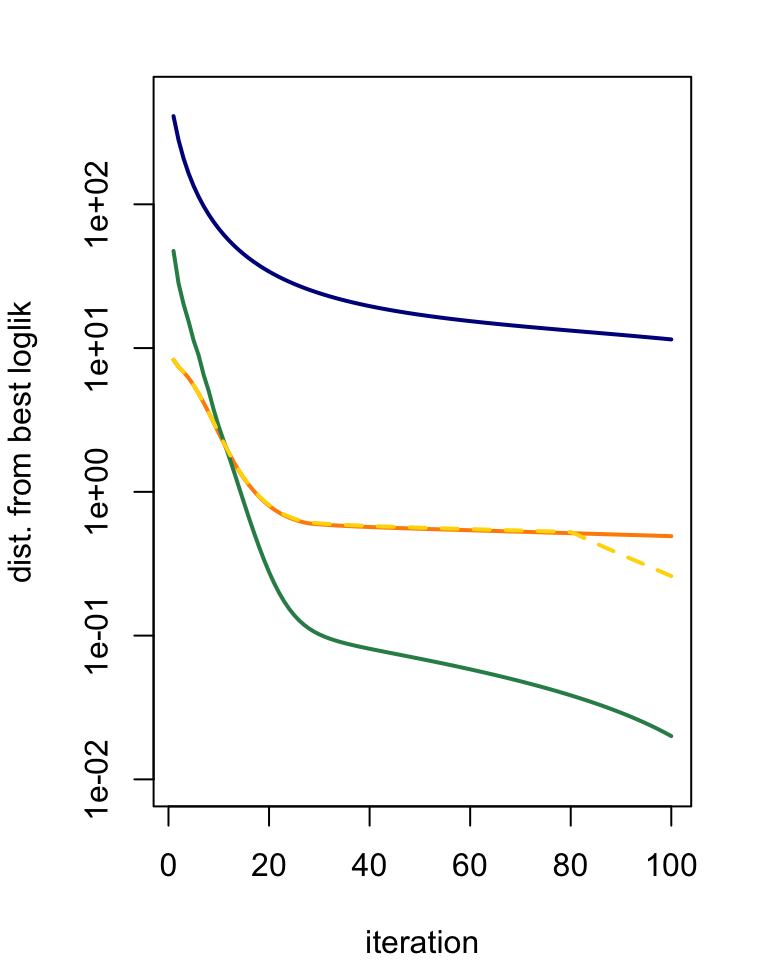

vignettes/mvebnm_intro.Rmd
mvebnm_intro.RmdHere we illustrate the mvebnm method in a simulated data set, in which the data are simulated from the multivariate normal means model with 4 mixture components.
We simulate 4,000 data points from a mixture of multivariate normals, \[ w_1 N(0,S + U_1) + \cdots + w_4 N(0,S + U_4). \]
One innovation in mvebnm is that the M-step update for the prior covariances is solved exactly by truncating the eigenvalues in a spectral decomposition of the unconstrained maximum-likelihood estimate. This provides greater freedom in fitting the model; here we demonstrate this by comparing the new update, update.U = "teem", against the “Extreme Deconvolution” update, update.U = "ed".
First, fit the multivariate normal means model using the original “Extreme Deconvolution” update:
Next, fit the model using the “truncated eigenvalue” update:
The “truncated eigenvalue” update provides a better fit, as measured by the likelihood:
print(fit.ed$loglik,digits = 12)
print(fit.teem$loglik,digits = 12)
# [1] -12210.9601056
# [1] -12199.9654823This is because the new update allows for much greater flexibility in the covariance estimates:
print(round(sapply(fit.ed$U,function (x) eigen(x)$values),digits = 6))
print(round(sapply(fit.teem$U,function (x) eigen(x)$values),digits = 6))
# k1 k2 k3 k4
# [1,] 0.310976 0.348350 0.590743 0.189784
# [2,] 0.099464 0.104345 0.110707 0.078166
# k1 k2 k3 k4
# [1,] 0 0.130364 1.256387 0
# [2,] 0 0.000000 0.250080 0The output above shows the eigenvalues of each of the four 2 x 2 covariance matrices. The TEEM updates have shrunk some of the eigenvalues to zero, leading to prior covariances with an effective rank of 0, 1 or 2 — this is the number of non-zero eigenvalues in each column of the output above. By contrast, the prior covariances estimated by the ED algorithm are all full rank — all the eigenvalues are greater than zero.
In cases where the residual variance-covariance matrix, \(S\), is not known, mvebnm can estimate it from the data:
The resulting likelihood is slightly higher than the fixing the residual covariance to the ground-truth:
We provide two implementations of the mvebnm methods: an R version with code that is easier to understand, and simpler to maintain; and a C++ (Rcpp) version that can be much faster. Both implementations should give the same, or nearly the same, output. Here’s an example:
set.seed(1)
t1 <- system.time(
fit1 <- mvebnm(X,k = k,control = list(update.S = "em",version = "R")))
set.seed(1)
t2 <- system.time(
fit2 <- mvebnm(X,k = k,control = list(update.S = "em",version = "Rcpp")))Indeed, both runs achieve the same likelihood (you can check for yourself that the parameter estimates are also the same),
print(fit1$loglik,digits = 12)
print(fit2$loglik,digits = 12)
# [1] -12199.4837195
# [1] -12199.4837195but the C++ implementation achieves the result much more quickly:
There is also the potential to use the mix-SQP algorithm to fit the mixture weights, with estimates of the other parameters fixed. This could be useful as a “re-fitting” step to improve the model after first running the EM updates:
set.seed(1)
fit.mixsqp <- mvebnm(X,k = k,S = S,
control = list(maxiter = 80))
fit.mixsqp <- mvebnm(X,fit0 = fit.mixsqp,
control = list(update.w = "mixsqp",maxiter = 20))The mix-SQP updates only achieve a slightly higher likelihood,
print(fit.teem$loglik,digits = 12)
print(fit.mixsqp$loglik,digits = 12)
# [1] -12199.9654823
# [1] -12199.7233099but, perhaps more compellingly, in this example mix-SQP assigns (nearly) zero weight to a redundant mixture component, whereas the EM algorithm does not:
print(round(fit.teem$w,digits = 3))
print(round(fit.mixsqp$w,digits = 3))
# k1 k2 k3 k4
# 0.255 0.244 0.210 0.290
# k1 k2 k3 k4
# 0.315 0.531 0.153 0.000The benefits of the mix-SQP updates need to be explored further.
Each EM update should improve the log-likelihood. Here we show the improvement in the solution over time for the four variants illustrated above: “Extreme Deconvolution” updates (dark blue); “truncated-eigenvalue” updates with the mix-SQP re-fitting step (dashed, yellow line), and without (solid, orange line); and “truncated-eigenvalue” updates combined with estimating the residual covariance (green line).
par(mar = c(4,4,2,2))
y <- cbind(fit.ed$progress$loglik,
fit.teem$progress$loglik,
fit.teem2$progress$loglik,
fit.mixsqp$progress$loglik)
y <- max(y) - y + 0.01
plot(1:100,y[,1],col = "darkblue",type = "l",log = "y",lwd = 2,
xlab = "iteration",ylab = "dist. from best loglik",ylim = c(0.01,500))
lines(1:100,y[,2],col = "darkorange",lwd = 2)
lines(1:100,y[,3] + 0.01,col = "seagreen",lwd = 2)
lines(1:100,y[,4] + 0.01,col = "gold",lwd = 2,lty = "dashed")
The combination of the “truncated-eigenvalue” updates and estimation of the residual covariance provides the best fit in this case.